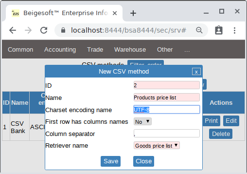
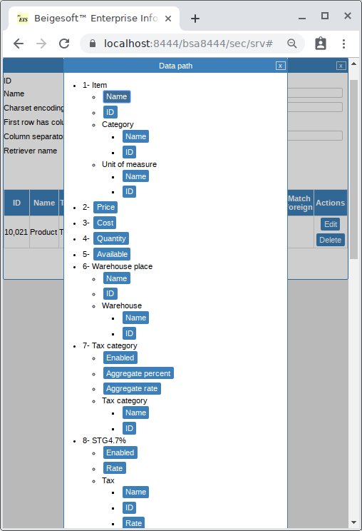
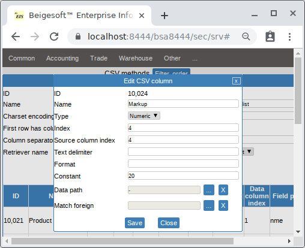
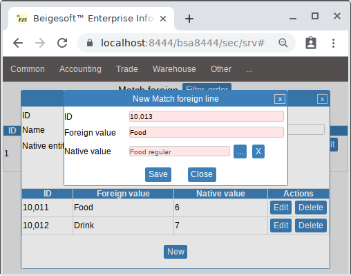
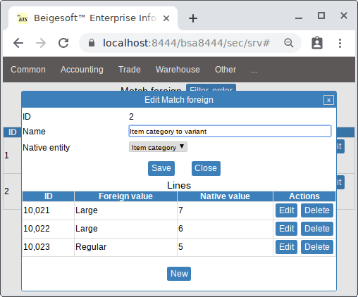
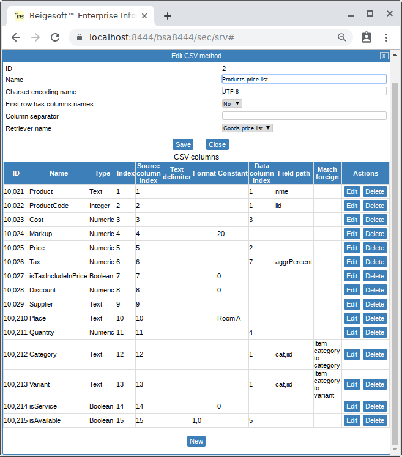
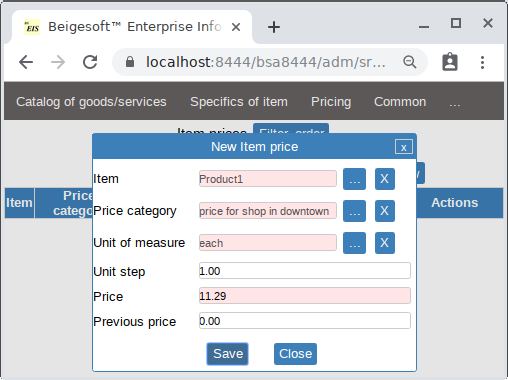
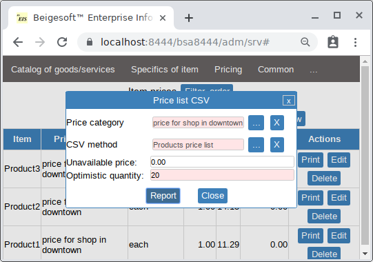

Export price list into CSV file.
Keywords: export price list into CSV file.
You can use Beigesoft™ EIS to make price lists in different price categories, e.g. "Price for shop1", "Price for customers A". Pricing is available in the "Web-Store" part of Beigesoft EIS.
There are no standards to make a price list in a CSV file for a POS. For example, different POS require different tax formats. For example, consider making CSV file for multiple-tax TAX5% and TAX6% and 3 items: product1(TAX5%,TAX6%), product2(TAX5%), product3(non-taxable):
- POS1 requires this format:
Product,ProductCode,Price,TaxMethod product1,1,12.4,TAXMETH1 product2,2,11.41,TAXMETH2 product3,2,4.6,
- POS2 requires this format:
Product,ProductCode,Price,UseTax5%,UseTax6% product1,1,12.4,true,true product2,2,11.41,true,false product3,2,4.6,false,false
- POS3 requires this format:
Product,ProductCode,Price,Tax5%,Tax6% product1,1,12.4,5,6 product2,2,11.41,5,0 product3,2,4.6,0,0
- there are else similar formats
Beigesoft™ EIS allows you to make a CSV file for numerous requirements.
Example of exporting price list into CSV file.
Assume we have three sales taxes: STG4.7%, STG6.4%, STS11%. A POS expects a CSV file with this format:
Product,ProductCode,Cost,Markup,Price,Tax,IsTaxIncudedInPrice,Discount,Supplier,Place,Quantity,Category,Variant,isService,isAvailable product1,1,1.00,20.00,1.20,11.1,0,0.00,,room1,12,food,regular,0,1 product2,2,1.00,25.00,1.25,4.7,0,0.00,,room1,11,food,large,0,1 product3,3,2.00,25.00,2.50,0,0,0.00,,room1,11,drink,regular,0,1there the tax means an aggregate tax rate (percent). The product1 has the tax category#1 (STG4.7%, STG6.4%), the product2 has the tax category#3 (STG4.7%), the product3 is not taxable.
First, add a "CSV Method" with the data retriever "Product price list" in menu - "main"-"..."-"CSV Methods":

there the "Has header" field means whether print or not columns names in the first line. UTF-8 is the most used encoding in modern software (POS).
The first column is "Product" name of type "Text", just pick the "Item->name" in the "data path picker":

The second column "ProductCode" is done in the same way (by picking Item->ID).
We do not want to pass these data: cost, markup, supplier. The supplier column is empty, the "place" is constant "room a", the "IsTaxIncudedInPrice" is constant 0, the "discount" is constant 0, "markup" is constant 20. A cost is a volatile thing and depends of the used method (FIFO, LIFO, etc). Sometimes the price can be less than the cost. The data retriever always make a fake cost=price/1.2, so just pick the "cost" in the picker. You can make any constant by putting its value into a "constant" field, e.g. the "Markup" is always 20.

* Leave empty the "constant" and the "data path" to put the empty value into a column (e.g. for the supplier).
Pick the "Price" in the data path picker to make the "Price" column of type "Numeric" - decimal number.
When you have only tax per an item, e.g. an item has tax10%, another one has 18%, then the picker will consist of only tax data column with fields - "is used" (is false for non-taxable), "rate=1 + percent/100", tax ID, tax name, tax percent. In our case, there are columns: "tax category" of current item, all used taxes, all used taxes categories. You have to point "aggregate tax percent", so just pick it from the "item tax category", its type is also Numeric (see the data picker above).
"IsTaxIncudedInPrice", "Discount" and "Place" are constants, "Supplier" is empty. Pick the "quantity" from the data picker, it's the rest (items left) in the warehouse.
Any product in Beigesoft EIS can have only category (1-level category), e.g. here product1 has category "Food regular", product2 - "Food large", product3 - "Drink large". To make columns "Category" and "Variant" we will use "Item category" (its ID) and "Match Foreign" methods:


after that, add the columns: "Category" and "Variant" with data path "Item category - ID" and dedicated "Match Foreign" method.
Finally, add the columns: "isService" as constant "0" and "isAvailable" of type "Boolean" with "data path" "Available" and format "1,0". Default format for "Boolean" is "true,false". CSV "Boolean" standard is often "1,0". Finally, the CSV method is:

To add a product into a price list you should add a "Price category" in the "Menu -> Web-store Admin-> Pricing", e.g. "price for shop in downtown":

Then add "Item price" for all goods, e.g.:

Finally, to make a CSV file, open in the menu "Pricing-Price list", the select the "CSV Method" and "Price category" fields, then press the "Report" button:

*Set the "optimistic quantity" field to any number, e.g. 20, to set the quantity and "isAvailable" for products that do not exist in the warehouse.
As a result, CSV file is:
Product1,10,9.41,20,11.29,11.1,0,0,,Room A,20,Food,Regular,0,1 Product2,11,11.79,20,14.15,4.7,0,0,,Room A,20,Food,Large,0,1 Product3,12,6.03,20,7.23,0,0,0,,Room A,20,Drink,Large,0,1
Troubleshooting.
Some software may require excessive non-standard things. For example passing a price with a currency code, e.g. "125.67USD", or a decimal number with exactly 1 decimal place, i.e. it can't handle a value such as "12.10". Using excessive non-standard things is really not a good feature. Any program language accepts strings "1", "1.0" or "1.00" as decimal number 1.0. But you can set required decimal places, decimal separator and decimal group separator in the "Data format" field. The format is: "[decimal-separator],[group-separator],[decimal-places]", for example the number is 12412.15:
- .,NONE,1 gives 12412.2
- COMMA,NONE,1 gives 12412,2
- COMMA,NONE,2 gives 12412,15
- COMMA,SPACE,4 gives 12 412,1500
- .,COMMA,4 gives 12,412.1500
- .,-,5 gives 12-412.15000